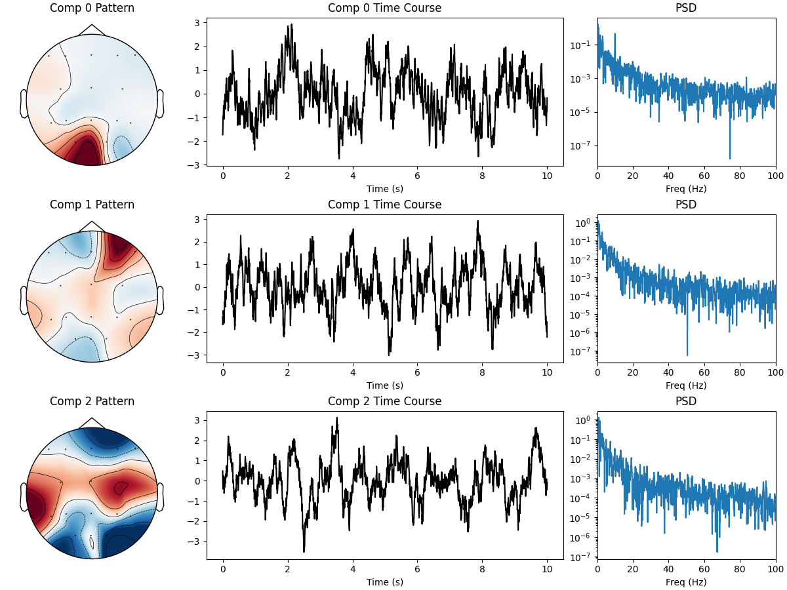
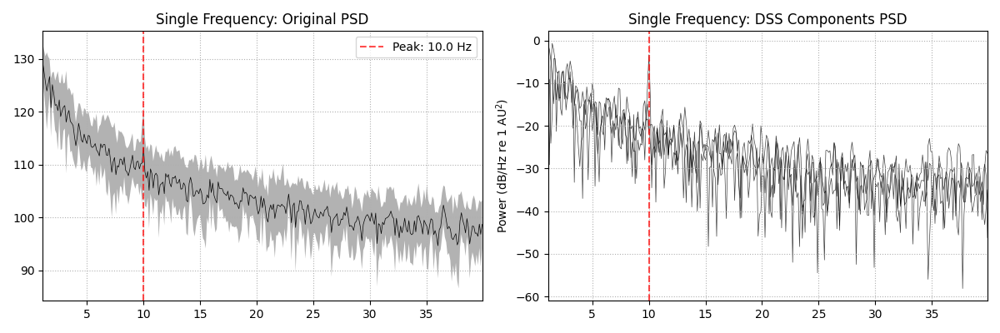
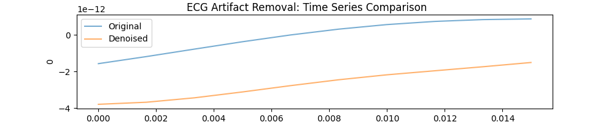
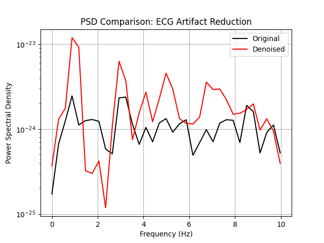

Note
Go to the end to download the full example code.
Example 5: Periodic Signals (SSVEP & Quasi-Periodic).#
This example comprehensively demonstrates periodic signal extraction using DSS.
Periodic Module Functions: - PeakFilterBias: Single frequency (narrow bandpass) - CombFilterBias: Fundamental + harmonics (SSVEP) - QuasiPeriodicDenoiser: Template-based (ECG, respiration)
DSS Types: - DSS: Linear spatial filtering (bias functions) - IterativeDSS: Nonlinear denoising (iterative refinement)
Structure: - Part 0: Single Frequency (PeakFilterBias + DSS) - Part 1: SSVEP Harmonics (CombFilterBias + DSS) - Part 2: Quasi-Periodic Synthetic (QuasiPeriodicDenoiser + IterativeDSS) - Part 3: Real ECG Artifact (QuasiPeriodicDenoiser, single-channel)
- Authors: Sina Esmaeili (sina.esmaeili@umontreal.ca)
Hamza Abdelhedi (hamza.abdelhedi@umontreal.ca)
import matplotlib.pyplot as plt
import mne
import numpy as np
from scipy.signal import detrend
from mne_denoise.dss import DSS, IterativeDSS
from mne_denoise.dss.denoisers import (
CombFilterBias,
PeakFilterBias,
QuasiPeriodicDenoiser,
)
from mne_denoise.dss.variants import ssvep_dss
from mne_denoise.viz import (
plot_component_summary,
plot_psd_comparison,
plot_spectral_psd_comparison,
plot_time_course_comparison,
)
Part 0: Single Frequency (PeakFilterBias)#
PeakFilterBias applies a narrow bandpass filter at a single frequency. Simpler than CombFilterBias, useful for extracting single oscillations.
print("\n--- Part 0: Single Frequency Extraction (PeakFilterBias) ---")
rng = np.random.default_rng(42)
sfreq = 250
n_seconds = 10
n_times = n_seconds * sfreq
n_channels = 16
# Simulate alpha rhythm (10 Hz) embedded in noise
alpha_freq = 10.0
times = np.arange(n_times) / sfreq
# Pink noise background
noise = np.cumsum(rng.standard_normal((n_channels, n_times)), axis=1)
noise = detrend(noise, axis=1)
# Alpha source
alpha_source = np.sin(2 * np.pi * alpha_freq * times)
# Mix into occipital channels
mixing = rng.standard_normal(n_channels) * 0.1
mixing[0:2] = [2.0, 1.5] # Strong in channels 0, 1
alpha_component = np.outer(mixing, alpha_source)
data_alpha = noise + alpha_component
# Create MNE Raw with montage
ch_names = [
"Oz",
"O1",
"O2",
"Pz",
"P3",
"P4",
"P7",
"P8",
"Cz",
"C3",
"C4",
"Fz",
"F3",
"F4",
"F7",
"F8",
]
info = mne.create_info(ch_names, sfreq, "eeg")
montage = mne.channels.make_standard_montage("standard_1020")
info.set_montage(montage)
raw_alpha = mne.io.RawArray(data_alpha, info)
print(f"Simulated {n_seconds}s, {n_channels} channels, {sfreq} Hz")
print(f"Alpha at {alpha_freq} Hz (channels Oz, O1)")
--- Part 0: Single Frequency Extraction (PeakFilterBias) ---
Creating RawArray with float64 data, n_channels=16, n_times=2500
Range : 0 ... 2499 = 0.000 ... 9.996 secs
Ready.
Simulated 10s, 16 channels, 250 Hz
Alpha at 10.0 Hz (channels Oz, O1)
Apply DSS with PeakFilterBias#
peak_bias = PeakFilterBias(freq=alpha_freq, sfreq=sfreq, q_factor=30)
dss_peak = DSS(n_components=5, bias=peak_bias)
dss_peak.fit(raw_alpha)
print(f"\nDSS Eigenvalues: {dss_peak.eigenvalues_[:5]}")
sources_peak = dss_peak.transform(raw_alpha)
plot_component_summary(dss_peak, data=raw_alpha, n_components=3, show=False)
plt.show(block=False)
# Comparison
plot_spectral_psd_comparison(
raw_alpha, sources_peak, sfreq, peak_freq=alpha_freq, show=False
)
plt.gcf().axes[0].set_title("Single Frequency: Original PSD")
plt.gcf().axes[1].set_title("Single Frequency: DSS Components PSD")
plt.show(block=False)
- 
- 
DSS Eigenvalues: [0.06418189 0.00324281 0.00217234 0.00153842 0.00127606]
Effective window size : 8.192 (s)
Plotting power spectral density (dB=True).
Creating RawArray with float64 data, n_channels=3, n_times=2500
Range : 0 ... 2499 = 0.000 ... 9.996 secs
Ready.
Effective window size : 8.192 (s)
Plotting power spectral density (dB=True).
/home/runner/work/mne-denoise/mne-denoise/mne_denoise/viz/comparison.py:161: RuntimeWarning: Channel locations not available. Disabling spatial colors.
psd_comp.plot(axes=axes[1], show=False, picks="all")
Part 1: SSVEP (CombFilterBias)#
CombFilterBias filters fundamental + harmonics, ideal for SSVEP.
print("\n--- Part 1: SSVEP with Harmonics (CombFilterBias) ---")
# Simulate 12 Hz SSVEP with harmonics
f_stim = 12.0
ssvep_source = (
1.0 * np.sin(2 * np.pi * f_stim * times) # 12 Hz
+ 0.5 * np.sin(2 * np.pi * 2 * f_stim * times) # 24 Hz
+ 0.2 * np.sin(2 * np.pi * 3 * f_stim * times) # 36 Hz
)
noise_ssvep = np.cumsum(rng.standard_normal((n_channels, n_times)), axis=1)
noise_ssvep = detrend(noise_ssvep, axis=1)
ssvep_component = np.outer(mixing, ssvep_source)
data_ssvep = noise_ssvep + ssvep_component
raw_ssvep = mne.io.RawArray(data_ssvep, info)
print(f"SSVEP at {f_stim} Hz + harmonics (24, 36 Hz)")
--- Part 1: SSVEP with Harmonics (CombFilterBias) ---
Creating RawArray with float64 data, n_channels=16, n_times=2500
Range : 0 ... 2499 = 0.000 ... 9.996 secs
Ready.
SSVEP at 12.0 Hz + harmonics (24, 36 Hz)
Method 1: Manual DSS + CombFilterBias#
comb_bias = CombFilterBias(
fundamental_freq=f_stim, sfreq=sfreq, n_harmonics=3, q_factor=30
)
dss_comb = DSS(n_components=5, bias=comb_bias)
dss_comb.fit(raw_ssvep)
print(f"\nManual DSS Eigenvalues: {dss_comb.eigenvalues_[:5]}")
print(f"Harmonic frequencies: {comb_bias.harmonic_frequencies}")
sources_comb = dss_comb.transform(raw_ssvep)
plot_component_summary(dss_comb, data=raw_ssvep, n_components=3, show=False)
plt.show(block=False)
Manual DSS Eigenvalues: [0.05223386 0.00278024 0.00195946 0.0015991 0.00076182]
Harmonic frequencies: [12.0, 24.0, 36.0]
Method 2: Convenience Wrapper (ssvep_dss)#
Same result, simpler API
dss_wrapper = ssvep_dss(sfreq=sfreq, stim_freq=f_stim, n_harmonics=3, n_components=5)
dss_wrapper.fit(raw_ssvep)
print(f"\nWrapper DSS Eigenvalues: {dss_wrapper.eigenvalues_[:5]}")
print("(Should match manual approach)")
# PSD comparison
plot_spectral_psd_comparison(
raw_ssvep, sources_comb, sfreq, peak_freq=f_stim, fmax=50, show=False
)
plt.gcf().axes[0].set_title("SSVEP: Original PSD")
plt.gcf().axes[1].set_title("SSVEP: DSS Components PSD")
# Mark harmonics
for ax in plt.gcf().axes:
for h in [2, 3]:
ax.axvline(f_stim * h, color="orange", linestyle="--", alpha=0.5)
plt.show(block=False)
Wrapper DSS Eigenvalues: [0.05223386 0.00278024 0.00195946 0.0015991 0.00076182]
(Should match manual approach)
Effective window size : 8.192 (s)
Plotting power spectral density (dB=True).
Creating RawArray with float64 data, n_channels=3, n_times=2500
Range : 0 ... 2499 = 0.000 ... 9.996 secs
Ready.
Effective window size : 8.192 (s)
Plotting power spectral density (dB=True).
/home/runner/work/mne-denoise/mne-denoise/mne_denoise/viz/comparison.py:161: RuntimeWarning: Channel locations not available. Disabling spatial colors.
psd_comp.plot(axes=axes[1], show=False, picks="all")
Part 2: Quasi-Periodic (Iterative DSS + Multi-Channel)#
QuasiPeriodicDenoiser works with IterativeDSS for multi-channel spatial denoising.
print("\n--- Part 2: Quasi-Periodic Denoising (IterativeDSS) ---")
# Simulate multi-channel heartbeat-like signal
n_beats = 10
beat_interval = 0.8 # seconds (~75 BPM)
beat_samples = int(beat_interval * sfreq)
# Single beat template (QRS complex)
t_beat = np.linspace(0, 1, beat_samples)
beat_template = (
-0.2 * np.exp(-((t_beat - 0.2) ** 2) / 0.001) # Q wave
+ 1.0 * np.exp(-((t_beat - 0.25) ** 2) / 0.0005) # R wave
+ -0.3 * np.exp(-((t_beat - 0.3) ** 2) / 0.001) # S wave
+ 0.15 * np.exp(-((t_beat - 0.55) ** 2) / 0.005) # T wave
)
# Multi-channel quasi-periodic signal
rng2 = np.random.default_rng(123)
n_times_qp = n_beats * beat_samples
# Different channels have different ECG strengths (spatial pattern)
ecg_mixing = np.array(
[1.5, 1.2, 0.8, 0.5, 0.3, 0.2, 0.1, 0.1, 0.05, 0.05, 0.05, 0.0, 0.0, 0.0, 0.0, 0.0]
)
quasi_periodic_mc = np.zeros((n_channels, n_times_qp))
for i in range(n_beats):
start_idx = i * beat_samples
# Add variation per beat
amplitude = 1.0 + rng2.normal(0, 0.1)
time_jitter = rng2.integers(-10, 10)
actual_start = max(0, start_idx + time_jitter)
actual_end = min(n_times_qp, actual_start + beat_samples)
beat_len = actual_end - actual_start
# Mix into channels with different strengths
for ch in range(n_channels):
quasi_periodic_mc[ch, actual_start:actual_end] += (
ecg_mixing[ch] * amplitude * beat_template[:beat_len]
)
# Add noise
noisy_qp_mc = quasi_periodic_mc + 0.3 * rng2.standard_normal((n_channels, n_times_qp))
# Create Raw
ch_names_short = ch_names # Reuse
info_qp = mne.create_info(ch_names_short, sfreq, "eeg")
info_qp.set_montage(montage)
raw_qp = mne.io.RawArray(noisy_qp_mc, info_qp)
print(f"Multi-channel quasi-periodic: {n_channels} channels, {n_beats} beats")
--- Part 2: Quasi-Periodic Denoising (IterativeDSS) ---
Creating RawArray with float64 data, n_channels=16, n_times=2000
Range : 0 ... 1999 = 0.000 ... 7.996 secs
Ready.
Multi-channel quasi-periodic: 16 channels, 10 beats
Comparison: Single-Channel vs Multi-Channel Denoising#
First, apply QuasiPeriodicDenoiser to a single channel (no spatial info).
qp_denoiser_single = QuasiPeriodicDenoiser(
peak_distance=int(beat_interval * sfreq * 0.7),
peak_height_percentile=70,
smooth_template=True,
)
# Denoise channel 0 only (strongest ECG)
denoised_single = qp_denoiser_single.denoise(noisy_qp_mc[0])
print("\nSingle-channel denoising: Uses only temporal information from 1 channel")
Single-channel denoising: Uses only temporal information from 1 channel
Apply IterativeDSS with QuasiPeriodicDenoiser#
Now use spatial information from all channels.
qp_denoiser = QuasiPeriodicDenoiser(
peak_distance=int(beat_interval * sfreq * 0.7),
peak_height_percentile=70,
smooth_template=True,
)
idss_qp = IterativeDSS(n_components=3, denoiser=qp_denoiser, max_iter=3)
idss_qp.fit(raw_qp)
sources_qp = idss_qp.transform(raw_qp)
print(f"\nIterativeDSS converged in {len(idss_qp.convergence_info_)} iterations")
print("Multi-channel denoising: Uses spatial + temporal information")
plot_component_summary(idss_qp, data=raw_qp, n_components=3, show=False)
plt.show(block=False)
IterativeDSS converged in 3 iterations
Multi-channel denoising: Uses spatial + temporal information
Visualize Comparison: Single-Channel vs Multi-Channel#
t_qp = np.arange(n_times_qp) / sfreq
fig, axes = plt.subplots(4, 1, figsize=(12, 10))
# Ground truth
axes[0].plot(t_qp, quasi_periodic_mc[0], "k", linewidth=1.5)
axes[0].set_title("Ground Truth Quasi-Periodic (Channel 0)")
axes[0].set_ylabel("Amplitude")
axes[0].grid(True, alpha=0.3)
# Noisy
axes[1].plot(t_qp, noisy_qp_mc[0], "gray", alpha=0.7)
axes[1].set_title("Noisy Multi-Channel Data (Channel 0)")
axes[1].set_ylabel("Amplitude")
axes[1].grid(True, alpha=0.3)
# Single-channel denoising
axes[2].plot(t_qp, denoised_single, "orange", linewidth=1.5)
axes[2].set_title("QuasiPeriodicDenoiser Only (Single Channel, No Spatial Info)")
axes[2].set_ylabel("Amplitude")
axes[2].grid(True, alpha=0.3)
# IterativeDSS component (spatial + temporal)
axes[3].plot(t_qp, sources_qp[0], "green", linewidth=1.5)
axes[3].set_title("IterativeDSS Component 0 (Multi-Channel, Spatial+Temporal)")
axes[3].set_xlabel("Time (s)")
axes[3].set_ylabel("Amplitude")
axes[3].grid(True, alpha=0.3)
plt.tight_layout()
plt.show(block=False)
Quantitative Comparison#
# Compute correlation with ground truth
corr_single = np.corrcoef(quasi_periodic_mc[0], denoised_single)[0, 1]
corr_multi = np.corrcoef(quasi_periodic_mc[0], sources_qp[0])[0, 1]
# Compute SNR improvement
def compute_snr(signal, noise):
return 10 * np.log10(np.var(signal) / np.var(noise))
noise_orig = noisy_qp_mc[0] - quasi_periodic_mc[0]
noise_single = denoised_single - quasi_periodic_mc[0]
noise_multi = sources_qp[0] - quasi_periodic_mc[0]
snr_orig = compute_snr(quasi_periodic_mc[0], noise_orig)
snr_single = compute_snr(quasi_periodic_mc[0], noise_single)
snr_multi = compute_snr(quasi_periodic_mc[0], noise_multi)
print("\n--- Performance Comparison ---")
print("Correlation with ground truth:")
print(f" Single-channel denoiser: {corr_single:.3f}")
print(f" IterativeDSS (multi-ch): {corr_multi:.3f}")
print("\nSNR (dB):")
print(f" Original: {snr_orig:.1f}")
print(f" Single-channel denoiser: {snr_single:.1f} (+{snr_single - snr_orig:.1f})")
print(f" IterativeDSS (multi-ch): {snr_multi:.1f} (+{snr_multi - snr_orig:.1f})")
print(
f"\nIterativeDSS improvement: +{snr_multi - snr_single:.1f} dB over single-channel"
)
--- Performance Comparison ---
Correlation with ground truth:
Single-channel denoiser: 0.593
IterativeDSS (multi-ch): 0.766
SNR (dB):
Original: -1.6
Single-channel denoiser: -1.9 (+-0.3)
IterativeDSS (multi-ch): -10.2 (+-8.6)
IterativeDSS improvement: +-8.3 dB over single-channel
Part 3: Real ECG Artifact (Single-Channel Denoising)#
For real data, we demonstrate single-channel QuasiPeriodicDenoiser. (Multi-channel IterativeDSS is already shown in Part 2 with synthetic data)
print("\n--- Part 3: Real ECG Artifact (Sample Dataset) ---")
from mne.datasets import sample
data_path = sample.data_path()
raw_fname = data_path / "MEG" / "sample" / "sample_audvis_raw.fif"
raw_ecg = mne.io.read_raw_fif(raw_fname, preload=True, verbose=False)
raw_ecg.pick_types(meg="grad", eog=False, stim=False, exclude="bads")
raw_ecg.filter(0.5, 30, fir_design="firwin", verbose=False)
raw_ecg.crop(10, 30) # 20 seconds
print(f"MEG Data: {len(raw_ecg.ch_names)} channels, {raw_ecg.times[-1]:.1f}s")
# Select channel with ECG artifact
channel_data = raw_ecg.get_data()[0]
--- Part 3: Real ECG Artifact (Sample Dataset) ---
NOTE: pick_types() is a legacy function. New code should use inst.pick(...).
MEG Data: 203 channels, 20.0s
Apply QuasiPeriodicDenoiser to Single Channel#
ecg_denoiser = QuasiPeriodicDenoiser(
peak_distance=int(0.6 * raw_ecg.info["sfreq"]), # ~100 BPM
peak_height_percentile=85,
smooth_template=True,
)
denoised_channel = ecg_denoiser.denoise(channel_data)
print("Applied QuasiPeriodicDenoiser to MEG channel")
Applied QuasiPeriodicDenoiser to MEG channel
Visualize Results with Viz Module#
# Create Raw objects for viz functions
raw_channel = mne.io.RawArray(
channel_data[np.newaxis, :], mne.create_info(1, raw_ecg.info["sfreq"], "eeg")
)
raw_denoised = mne.io.RawArray(
denoised_channel[np.newaxis, :], mne.create_info(1, raw_ecg.info["sfreq"], "eeg")
)
# Time series comparison
plot_time_course_comparison(
raw_channel,
raw_denoised,
start=0,
stop=10, # First 10 seconds
show=False,
)
plt.gcf().suptitle("ECG Artifact Removal: Time Series Comparison")
plt.show(block=False)
# PSD comparison
plot_psd_comparison(raw_channel, raw_denoised, fmin=0, fmax=10, show=False)
plt.gcf().axes[0].set_title("PSD Comparison: ECG Artifact Reduction")
plt.show(block=False)
plt.show()
- 
- 
Creating RawArray with float64 data, n_channels=1, n_times=12013
Range : 0 ... 12012 = 0.000 ... 20.000 secs
Ready.
Creating RawArray with float64 data, n_channels=1, n_times=12013
Range : 0 ... 12012 = 0.000 ... 20.000 secs
Ready.
Effective window size : 3.410 (s)
Effective window size : 3.410 (s)
Total running time of the script: (0 minutes 5.752 seconds)